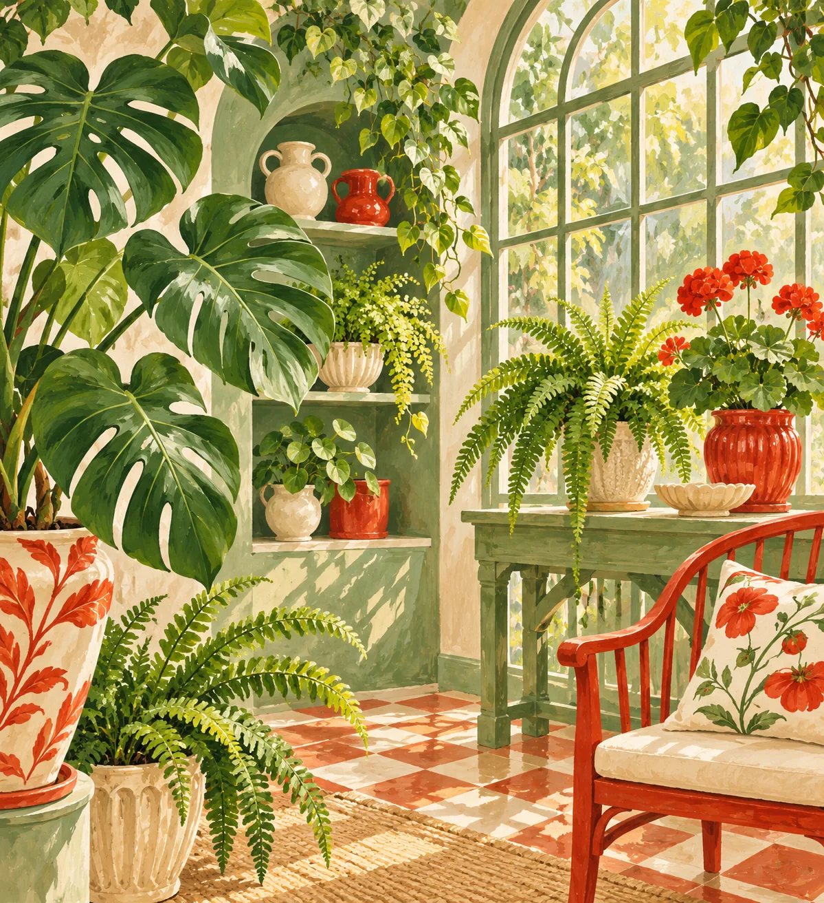
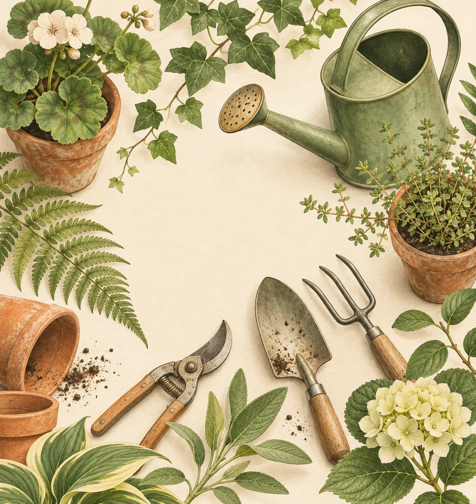

绿意观察室
分类导航
成人百科 ↗
室内植物与园艺 · 精选网址
给日子添一点 生长的绿意
认识植物，寻找养护灵感，也为生活留一块安静的绿地。

成人百科
成人资讯入口 · 仅限年满 18 周岁者访问
↗
分类导航
选择感兴趣的入口，发现更多内容
植物百科
中国植物志
↗
中国科学院植物研究所
↗
植物智
↗
英国皇家植物园 Kew
↗
花园与养护
皇家园艺协会
↗
Gardeners World
↗
Gardening Know How
↗
The Spruce 花园
↗
灵感收藏
小红书
↗
Pinterest
↗
Unsplash
↗
哔哩哔哩
↗
生活与阅读
豆瓣读书
↗
知乎
↗
国家地理
↗
中国天气网
↗

让生活慢慢长出绿意
认识植物，寻找养护灵感，也为生活留一块安静的绿地。